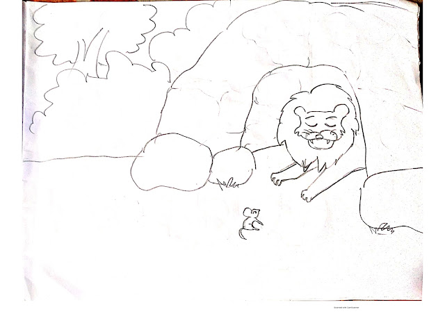

The story of the rat and the lion
September 24,2020
Once upon a time there lived a naked rat in a forest. A lion lived a short distance from his home. One day Nenti came to the lion looking for food and accidentally got into the lion's nose. The lion was resting in bed, but his sleep was disturbed when the rat entered his nostrils. The lion was very angry, the lion said to the little rat, you know who I am? You have so much courage to get into my nose. I can kill you right now. Hearing this, Nenti got very scared and apologized to him. 
Nenti said to the rat lion, "Maharaj, I accidentally got into your nose without knowing it. Please forgive me." I will definitely help you if I ever need it. The lion laughed out loud at this. The lion said I am the king of this forest all the animals in the whole forest are scared when they see me and you will help me to become a little little rat? I will never need your help. But when you say so much, I let you go. Which will never come again. A few days later, a lot of birds infested the farmers' fields near the forest. They ate and destroyed the grain of the field. Seeing this, the farmers became very restless. They decided to seize these birds anyway. So they all spread the net along the field. A few days later, the lion fell into the field one night while hunting. And then he got caught in the net tied to the farmers. Now no matter how much the lion roars,
The lion became very frightened and started shouting. Because if he is caught by the farmers there, his death is certain. The whole jungle awoke at his roar. But no one dared to go to the lion. Because they were afraid that if they got rid of the lion they would kill him. Meanwhile, it is dawn and the farmers will come to the field soon. If he doesn't get away with it, he won't have to go back to the forest. At that moment, the rat appeared in front of the lion. He asked the lion, "Maharaj, can I help you?" Then the lion begged him, "Brother, please cut this net and save my life." The rat started cutting the net as soon as possible as per his instructions. After a while the lion was free and thanked the rat. "I would have died if you hadn't been here today," said the lion. So thank you so much for cutting me off this net.
Tip: Never underestimate someone, no matter how small the animal.
The story of the tortoise and the rabbit
September 24,2020

A long time ago there was a small village called Haripur and there was a big lake next to that village. A tortoise lived under the calm water of the lake, and a rabbit lived with its young on the bank of the lake..... READ MORE
After a swim by Idries Shah
September 24,2020

We are all limited by our habits. In this story, a cat and horse make a deal to cross a river together to enjoy juicy corn in a field on the other side. But the cat's idiotic habits cause trouble and the horse must not only get them to safety but teach the cat a lesson.... READ MORE
The story of Petney and hair theft
September 24,2020

There was a village called Ratanpur where everyone was having a very good day. Ramen is a resident of that village. Ramen was sleeping then suddenly in the morning his wife shouted and called him to come to the next room. Ramen got up and came to the next room and saw that his daughter's hair had been cut short. Her daughter was very sad because her hair was gone. To alleviate her grief, her neighbors came to visit her every day to comfort her.... READ MORE